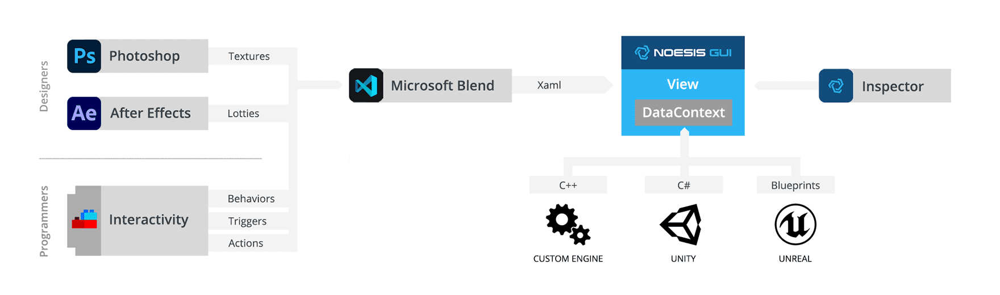
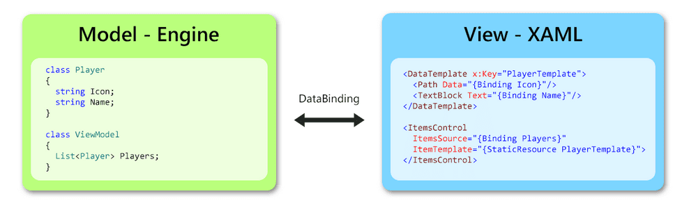
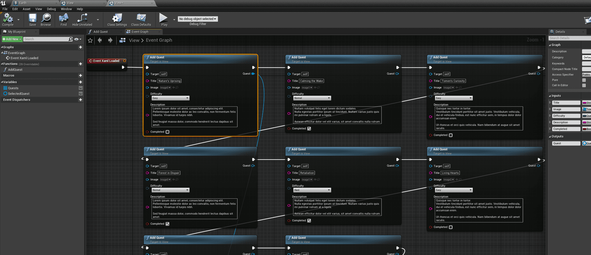
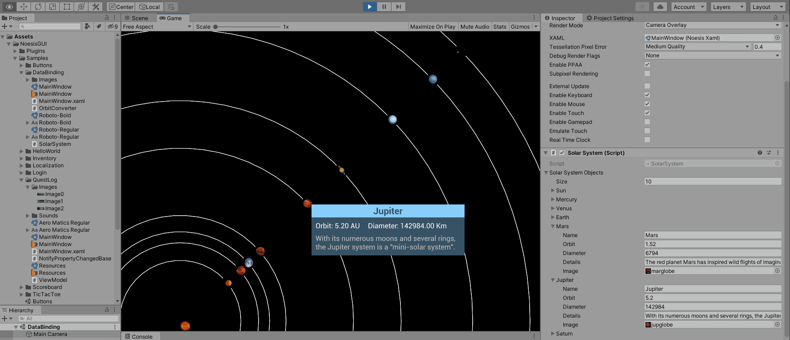
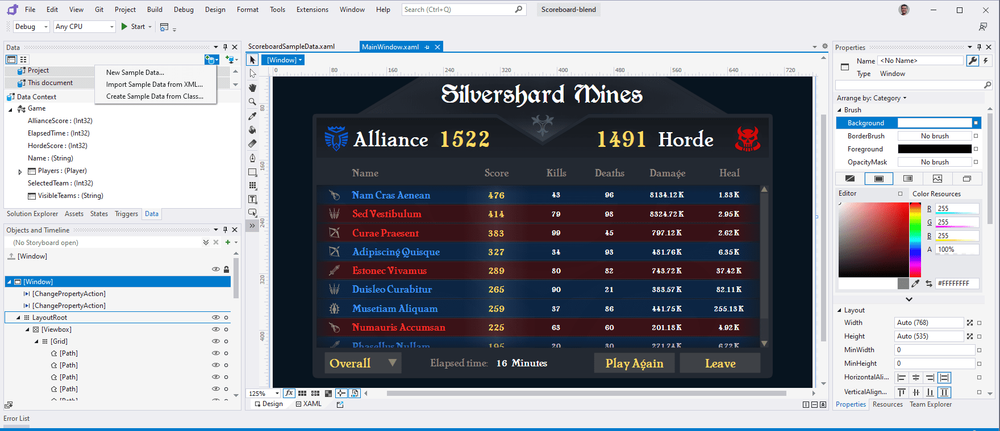
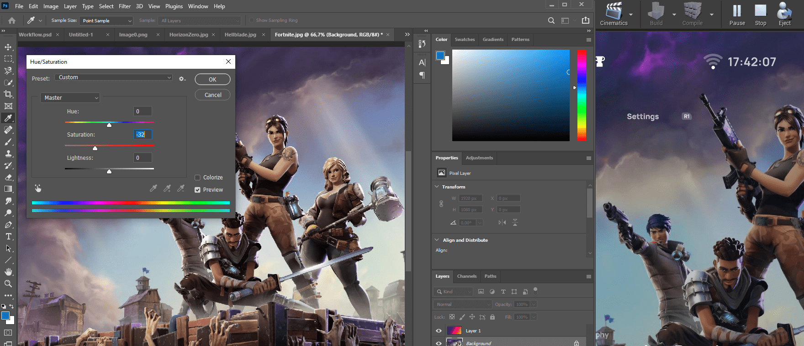
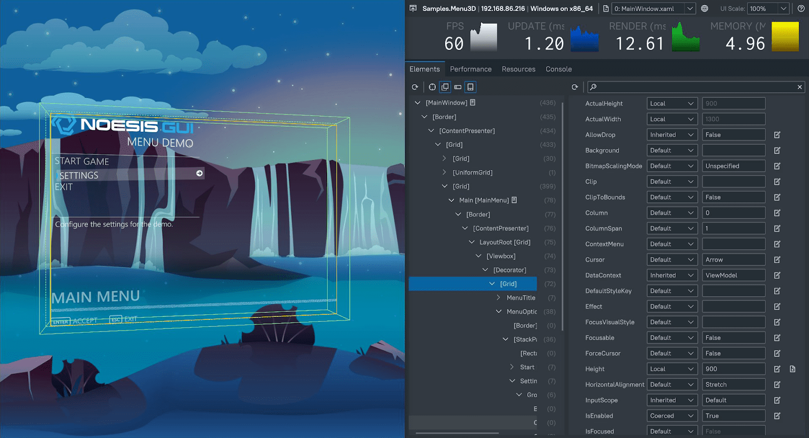

Workflow Tutorial
This document provides an overview of approaches and methods for efficient workflows when working with Noesis. We will describe how the different tools compatible with NoesisGUI are interconnected and will enumerate best practices to allow efficient pipelines by having programmers and designers working in parallel.
Thanks to the flexibility of NoesisGUI, a variety of tools like Photoshop, After Effects and Blend can be used in parallel with engines like Unity and Unreal or custom integrations.
DataContext
In Noesis, the View contains the UI elements users interact with. Views are updated and rendered per frame. More information is available in the Rendering Tutorial. Following MVVM naming conventions, View is also referred in this tutorial as the XAML that designers create using tools like Blend.
The View gets the information from the DataContext using Data Binding. We always recommend this pure MVVM approach when working with Noesis. This way roles are very clear when working on the UI:
- Programmers expose the available information through the DataContext, this is the Model in MVVM parlance. The DataContext is a hierarchical container of information. Note that the DataContext not only contains values like floats or integers. It can also expose complex objects like collections or commands. With Commands, designers can invoke functions from the XAML. The DataContext can also expose Events that can be used in XAML as triggers to execute Interactivity actions.
- Artists and Designers consume the information exposed in the DataContext by using bindings and event triggers.
Creating and dynamically updating the DataContext is handled differently on each supported platform.
Unreal
In Unreal Engine, the DataContext can be created by using the Blueprint Visual Scripting system. This way, designers don't need to interact with C++ and can test the interface without the assistance of a programmer.
This example showcases how to create and fill a DataContext using Blueprints. By default NoesisGUI uses the variables and functions (commands) defined in the View widget as DataContext. Alternatively you can create a new Blueprint class and connect it to the view with a SetDataContext node.
Unreal will automatically reload XAML changes, even in Play mode. Make sure the Blend project is properly mapped as explained in the Integration guide.
Unity
Although Unity doesn't provide a visual editor like Unreal, GameObjects can be inspected inside the editor. This way, a MonoBehaviour can be attached to the DataContext. For example, this is what the DataBinding example is doing to expose a collection of planets:
public class SolarSystem : MonoBehaviour, INotifyPropertyChanged
{
public List<SolarSystemObject> _solarSystemObjects = new List<SolarSystemObject>();
public List<SolarSystemObject> SolarSystemObjects { get => _solarSystemObjects; }
private void Start()
{
NoesisView view = GetComponent<NoesisView>();
view.Content.DataContext = this;
}
private void OnValidate()
{
_solarSystemObjects = new List<SolarSystemObject>(_solarSystemObjects);
PropertyChanged?.Invoke(this, new PropertyChangedEventArgs("SolarSystemObjects"));
}
public event PropertyChangedEventHandler PropertyChanged;
}
Note how the OnValidate callback is used to notify changes happening in the DataContext.
In Unity, the DataContext needs to be created in C#, so we recommend using Design-Time DataContexts with Blend (more on this later).
By default, Unity will automatically reload XAML changes while in Play mode. Find more information in the Integration guide.
Custom Engine
If the custom engine is using the C++ SDK, then the DataContext can be created using the reflection implemented in Noesis. C# already provides a reflection natively implemented in the language. In both cases, this needs the assistance of programers so we recommend using Design-Time DataContexts with Blend (more on this later).
To support hot reloading in proprietary engines, custom Providers or the Inspector tool must be used.
Microsoft Blend
Blend is the tool we always recommend for editing XAML. Assets like XAMLs, Images and Fonts must be located in a folder shared with the runtime (Unreal, Unity, Custom). That way, resources are not duplicated and each time they are edited in Blend, they hot reload in the application. With this setup, and for example using multiple monitors, you can have Blend in one monitor and Unity or Unreal in a second one. Thanks to Hot Reloading, the engine acts like a WYSIWYG editor of Blend as changes are applied instantly.
Blend supports creating Design-Time DataContexts. This is extremely useful when designers need to test a design but the engine still doesn't expose the needed properties in the DataContext. In these cases, designers can create a Sample Data in Blend for a fast initial iteration on the UI. Sample Data is available on the 'Data' tab of the project.
Adobe After Effects
Since NoesisGUI 3.0, bringing content from Adobe After Effects is possible. We provide a plugin for converting '.aep' projects to '.xaml' content. We recommend exporting as control template. That way is easier to merge the result into another XAML. For example:
<Grid>
<Grid.Resources>
<ResourceDictionary Source="ae_animation.xaml"/>
</Grid.Resources>
<Control Template="{StaticResource lottie}"/>
</Grid>
Adobe Photoshop
Thanks to hot reloading capabilities of Noesis, Photoshop (and in fact, any image editor) can be used to make changes to images and instantly see results on the UI. Texture are natively implemented in both Unreal and Unity. No extra assets are generated.
Interactivity
Sometimes designers needs extra functionality that is not available using DataBinding or standard XAML. The Interactivity package exposes a bunch of Triggers and Behaviors that can be used in many scenarios. For example, to react to UI events and send notifications back to the application:
<Grid>
<TextBlock Text="Chapter One">
<b:Interaction.Triggers>
<b:EventTrigger EventName="MouseEnter">
<b:InvokeCommandAction Command="{Binding MouseInTextCommand}"/>
</b:EventTrigger>
</b:Interaction.Triggers>
</TextBlock>
</Grid>
This package already includes a lot of functionality but, as your project evolves and designers need more things, the Interactivity package can be extended with custom Triggers and Actions. Interactivity constitutes a fundamental approach to extending Noesis functionality. It provides a modular way to apply modifications to existing controls without having to create new ones. Almost 95% of cases where you need to inherit from a control like a Button, there is always a cleaner alternative using Interactivity modular pieces.
Inspector
Development versions of Noesis, supports remote connections from the Inspector. One of the key features provided by the Inspector is live editing of objects in the visual tree. The Inspector is supported and enabled by default in Unity, Unreal and custom engines.
